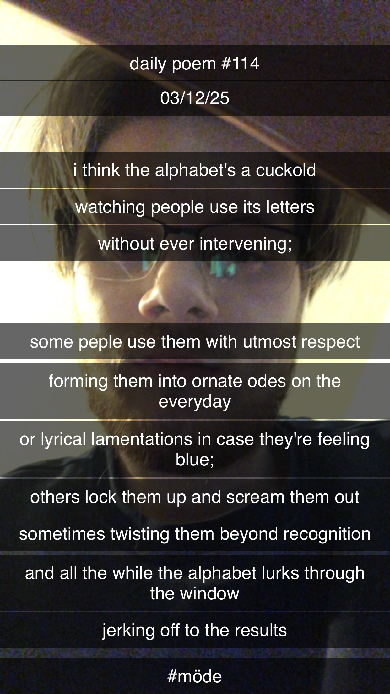

i think the alphabet's a cuckold.
i think the alphabet's a cuckold
watching people use its letters
without ever intervening;
some people use them with utmost respect
forming them into ornate odes on the everyday
or lyrical lamentations in case they're feeling blue;
others lock them up and scream them out,
sometimes twisting them beyond recognition,
and all the while the alphabet lurks through the window
jerking off to the results.
